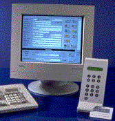

![[Oslonett Home]](/graphics/home.gif)
![[Oslonett Markedsplassen]](/graphics/market.gif)


Varslingssystemer introduserer ProxCom det eneste produktet på markedet som fullstendig integrerer adgangskontroll og alarm med FG-godkjent alarmdel. ProxCom er systemet for firma, kommune og eiendomsforvaltere som søker preventive tiltak mot innbrudd/vandalisme og som ønsker reduserte utgifter til vedlikehold. Gjennom FG-godkjent alarmanlegg oppnås redusert forsikringspremie og egenandel. Samtidig tilbys en endelig løsning på det stadig tilbakevendende problem med nøkler på avveie.
ProxCom alarmsystem
KOSTNADSEFFEKTIVT
Hver kortleser er en selvstendig, intelligent enhet som kan operere to dører.
All programmering skjer via leserens klartekstdisplay ved døren. Du investerer
kun i det antall lesere du har behov for, uten å måtte betale for
overkapasitet.
STATE-OF-THE-ART
Alarm-betjeningspanel og kortlesere er forberedt for Echelon-teknologi, den nye
standarden for kommunikasjon. Berøringsfri (trådløs) signalering mellom
bilbrikker og antenner i veibanen gir effektiv sikring av garageanlegg og
P-plasser.
Fra ett sentralt sted kan du heretter overvåke og administrere fjerntliggende
bygninger. Gjennom våre TV-overvåkningssystemer kan du samtidig overføre
bilder, -alt via det offentlige telenettet. I en alarmsituasjon ringer systemet
automatisk tilbake og du kan selv avgjøre hvilke mottiltak som må treffes.
Dette gir hittil uanede muligheter for besparelser i forhold til å foreta
manuell inspeksjon.
UANSETT STØRRELSE
Fra avansert kodelås til Windowsbasert sikringsanlegg. Hver kortleser er en
selvstendig enhet som kan styre to forskjellige dører. Den kan også benyttes
til å slå på og av eksisterende alarmanlegg. All programmering kan skje via
leserens tastatur, display eller fra Windowsbasert PC-program. Alle hendelser
lagres i kortleserens internminne og kan ved behov hentes frem via kortleserens
display eller PC.
MAGNETKORT ELLER BERØRINGSFRIE KORTLESERE
Benytt magnetkortleser for lavest mulig pris og berøringsfrie lesere der det
kreves stor hurtighet eller i utsatte miljøer der vandalisme kan være et
problem.
Vi gir livstidsgaranti mot produksjonsfeil på passive berøringsfrie kort.
ALT-I-ETT-KORT
Våre berøringsfrie kort kan leveres med magnetstripe, strekkode og foto-ID.
Dermed kan de benyttes i eksisterende adgangskontroll-, tidsregistrerings- og
kantinedebiteringssystemer. Vanlige bank- og kredittkort kan også benyttes i
våre lesere. Våre berøringsfrie elektroniske nøkler kan benyttes i samme
system. Disse er meget robuste og kan festes på nøkkelknippet, -praktisk og
uslitelig.
KOSTNADSKONTROLL
Nøkler erstattes av nøkkelkort og bortkomne kort slettes fra systemet. Dersom
du velger berøringsfritt gir vi deg livstidsgaranti mot produksjonsfeil på
passive kort.